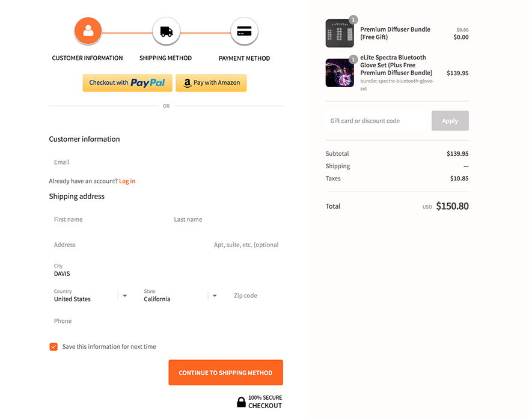

One of my most often used forms is a checkout form for online shopping. When checking out for the first time at a small online retailer, we can see that most of these forms are powered by a company Shopify.
The design used in the checkout process is streamlined and simple: it asks for the initial shipping and contact information, and displays everything that was in the shopping cart on a sidebar to the right. The steps toward finishing the checkout process are clearly labeled, and there are no extra optional forms. This allows for the process to be entirely uniform, and gives the user confidence when ordering.
For the most part, these forms are saved for future purchases and only require confirmation upon shopping. The process for saving information is also easy with a checkbox that allows the the company to store your information. Though navigating the forms is easy, sometimes it’s best to skip straight to checkout

Interface Design on the Web
Let’s take a look at Spotify.com. Making use of a variety of album covers as images, Spotify showcases popular titles at any viewport width. Let’s begin with the design as viewed on mobile: each section of the page is accompanied by an image that accentuates the text, and is distinguished by different background colors or images. Very little padding can be seen on the sides due to the restricted screen size.
As the screen is expanded to a typical vertical iPad viewing width, we can still see the hamburger menu icon for navigation, but there becomes a more defined grid in the body sections and increased padding. Spotify can also take a few more creative liberties with how images are displayed: instead of being confined to the same column, the images of each section are instead placed to the side of the text and resized to take up more screen space. Additionally, Spotify shows some animations and fade effects when displaying each section.
Finally, as the screen is resized for desktop, we can see a full range of animations and images. The grid expands slightly, however the most drastic difference is the additional space for images - instead of adding more images, Spotify shows more of the original image, creating a seamless viewing experience on any medium.